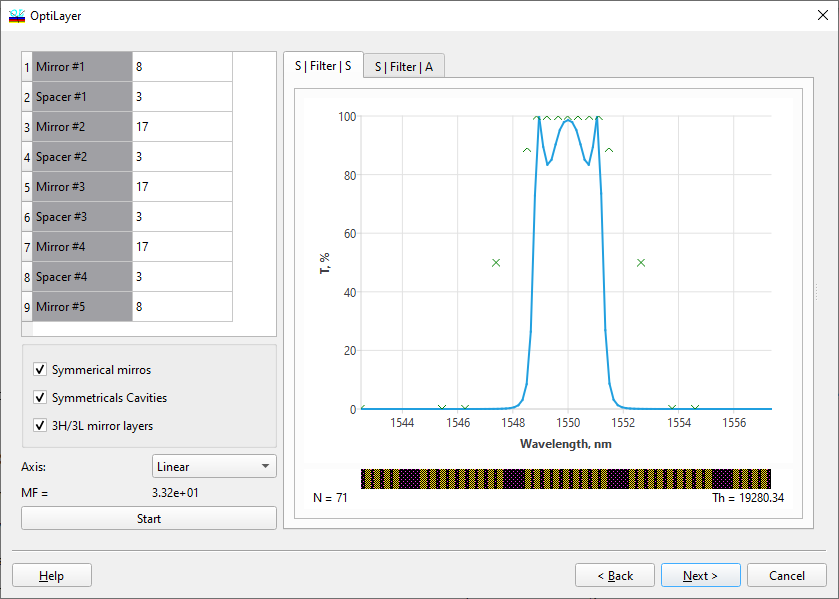

Filter Design - Global Integer Search
Filter Design - Global Integer Search

At the fifth step of the dialogue, a comprehensive mathematical procedure can be initiated to optimize the filter design according to the specified requirements. The optimization process can be halted at any time to proceed to the next dialogue step. Click the “Start!” button to begin this procedure, which can be stopped mid-process by clicking the same button, now labeled “Stop…”. Additional checkboxes provide options to modify various settings within the Global Integer Search procedure:
The “Symmetrical mirrors” checkbox restricts the search to designs with symmetrical mirrors, enhancing the search speed, particularly beneficial for complex filters with numerous cavities.
The “Symmetrical cavities” checkbox limits the search to designs with symmetrical cavities, improving search speed, especially useful for intricate filters with multiple cavities.

Note: If both the “Symmetrical mirrors” and “Symmetrical cavities” checkboxes are selected, the Global Integer Search procedure will focus on finding symmetrical WDM filter designs.
When the “Adjust to Incident” checkbox is selected, the filter is optimized based on the refractive index of the actual incident medium. Otherwise, it is optimized assuming the refractive index of the incident medium is equal to that of the substrate. Practical experience indicates that it is often preferable to optimize a filter using the latter option and then apply an appropriate AR coating on top of the filter (refer to the following Adjust to Incident Medium step).
The “3H/3L mirror layers” option allows for using 3H/3L layers in filter mirrors, potentially improving the optimization process.
See also: